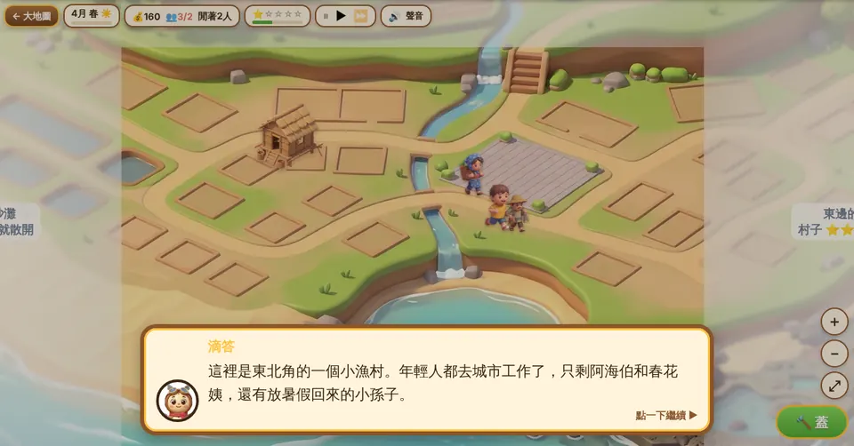

不是要孩子多讀書，是讓他們先不討厭這些科目
家裡的孩子升上小五，最怕的就是背社會、背單字。與其逼著背，不如先讓他們覺得「這個好像有點有趣」。
社會怕背？
用遊戲來理解
孩子跳進每個時代，自己動手解決當時人們遇到的難題。先懂「為什麼會這樣」，年代和名詞自然比較記得住。
穿越吧！島嶼開拓者背單字無趣？
融合遊戲記憶單字
蓋塔、打怪、打魔王，每一下都要認出、聽出或拼出英文單字。同一個字在不同關卡反覆遇到，不知不覺就記起來。
守護異世界從史前一路玩到今天的臺灣
目前只做了國小五年級社會（臺灣的歷史與地理）。孩子當見習生，跟著時光鐘塔的滴答穿越各個時代，每一章都是一段劇情加上解謎。
- 序章認識臺灣
- 第一章史前
- 第二章原住民族
- 第三章荷西
- 第四章鄭氏
- 第五章清領
- 第六章清末開港
- 第七章日治
- 終章戰後
- 現在的臺灣地理與生活

動手做過，才知道為什麼
例如第五章要自己編竹蛇籠、把溪水導進田裡蓋出八堡圳；第一章從打製石器一路做到煉鐵。做完再看課本，「水圳」「磨製石器」就不只是名詞。

有劇情、有人物、有選擇
每章都有當時的夥伴角色，孩子會遇到要做決定的時候，選擇會影響結局畫面。重點不是背答案，是理解當時的人為什麼這樣做。

整座島一段一段亮起來
每過一章，大地圖上就會出現那個時代的人物、建築和建設，孩子看得到臺灣是怎麼一步步變成今天的樣子。

最後回到現在的臺灣
全部破關後，地圖可以切到「現在」：漁村、規則小鎮、天空港、離島和景點明信片，帶到地理和公民的概念，也能跟過去的樣子對照。
各家課本的單元順序不太一樣，遊戲照時代排，不一定跟學校進度同步。內容參考課綱與公開資料整理，如果發現哪裡寫得不對，很歡迎告訴我們。
2000 個單字，變成守城的魔力
範圍是教育部公告的國中小 2000 個基本英文字彙，從國小最常用的 300 字開始，照生活主題分關、由淺到深。

看中文，點出對的英文
怪物身上寫著英文字，上面出中文，點對了箭塔才會發射。也有只聽發音的「聽字」，和一個字母一個字母的「拼字」，不是只有選擇題。

常錯的字會多出幾次
重玩關卡時，會優先出孩子常答錯的字。金幣和經驗只從答對來，同一個字一直刷獎勵會越來越少，買不到也刷不到分數。
這是輔助，不是主要的教材
這些遊戲的目的是提升孩子的興趣，讓他們回到課本時會覺得「這個我玩過」，而不是用來取代課本、老師或爸媽的陪伴。
- 遊戲只能帶到一部分重點，課本上的內容還是要讀。
- 英文單字在遊戲裡是「認得、聽得出、拼得出」，句子、文法和口說還是要靠課堂。
- 玩完問孩子一句「今天去了哪個時代？」「學到哪個字？」，效果會比多玩一關好很多。
每次 20 到 30 分鐘就好
短短玩、常常玩，比一次玩很久更記得住，也不會傷眼睛。
- 社會一章大約 20 到 30 分鐘，剛好一次玩完一章；英文一關大約 3 到 5 分鐘，一次玩幾關就好。
- 建議先寫完功課再玩，把它當成讀書後的小獎勵。
- 睡前一小時不要玩，讓眼睛和腦袋休息。
- 遊戲沒有付費項目、也沒有廣告，不用擔心孩子亂花錢。
用試玩班讓孩子玩玩看
不用 email，也不用真實姓名。孩子自己取一個帳號、密碼和暱稱就能開始。
- 網址
- timepark.ciyulab.com
- 班級代碼
- TRYIT
- 按下面的「開始冒險」，代碼會自動填好。
- 幫孩子取帳號（英文或數字）、密碼（6 個字以上）和暱稱。
- 捏一個自己的時空旅人，就可以出發了。
帳號密碼請幫孩子記下來・已經有帳號了？直接登入
還想知道的
點開看細節。
要花錢嗎？
不用，完全免費，沒有付費項目也沒有廣告。遊戲裡的時光幣只能靠玩出來，買不到。
適合幾年級？
社會目前是照小五的內容做的；英文從國小常用字開始，一路到國中範圍，三到六年級都可以玩，程度好的孩子可以往後挑戰。
在哪裡玩？要安裝嗎？
手機、平板、電腦的瀏覽器都可以，不用安裝 App。畫面比較大的平板或電腦玩起來最舒服。
試玩班會跟陌生人互動嗎？
試玩班有排行榜，所有試玩的孩子會在同一個榜上，只看得到暱稱。暱稱不要用真實姓名就好。
家長可以看到孩子玩了什麼嗎？
可以自己開一個班：在登入畫面按「我是老師／家長」→「第一次使用」，填 email 和密碼就能開班，拿到自己的班級代碼給孩子。之後在後台看得到孩子玩到哪、哪些字常錯。孩子已經在試玩班的話，登入後在「我的資料」加入新班級就好，進度都會帶著走。
忘記密碼怎麼辦？
請開班的老師或家長幫忙重設。在試玩班的話，可以在遊戲左上角的齒輪按「問題回報」告訴我們。
會不會只是在玩遊戲？
英文每一個動作都要答題，蓋塔、打怪、打魔王都靠答對；社會要理解當時的情況才解得開謎題。不過它終究是輔助，還是建議搭配課本，玩完跟孩子聊聊。
有建議或發現錯誤，要怎麼告訴你們？
遊戲裡左上角的齒輪有「問題回報」，哪裡卡住、哪裡不好玩、內容哪裡不對，或希望之後加什麼，都很歡迎留言。自然科和小四的內容也還在構思，很想聽聽大家的想法。